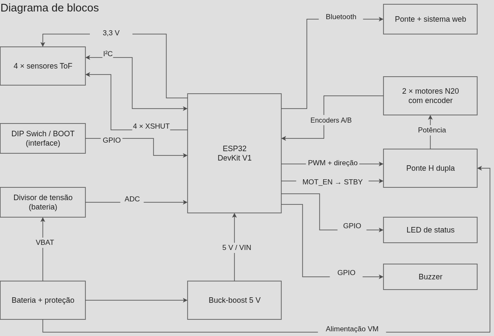
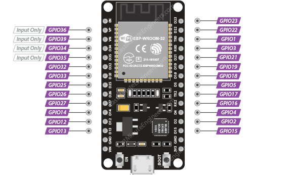
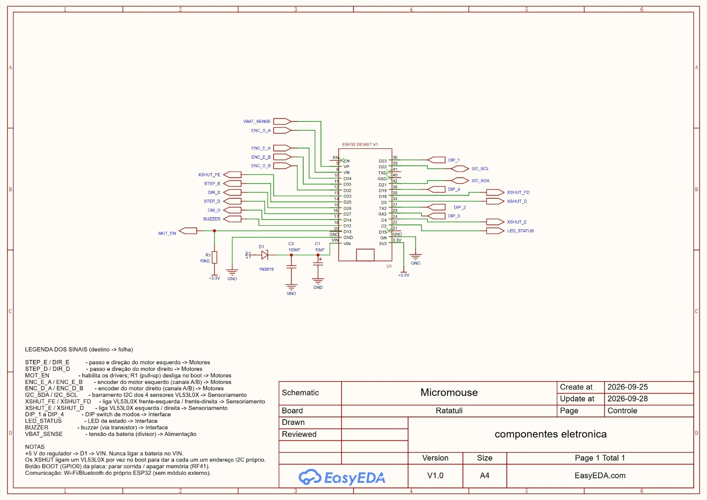
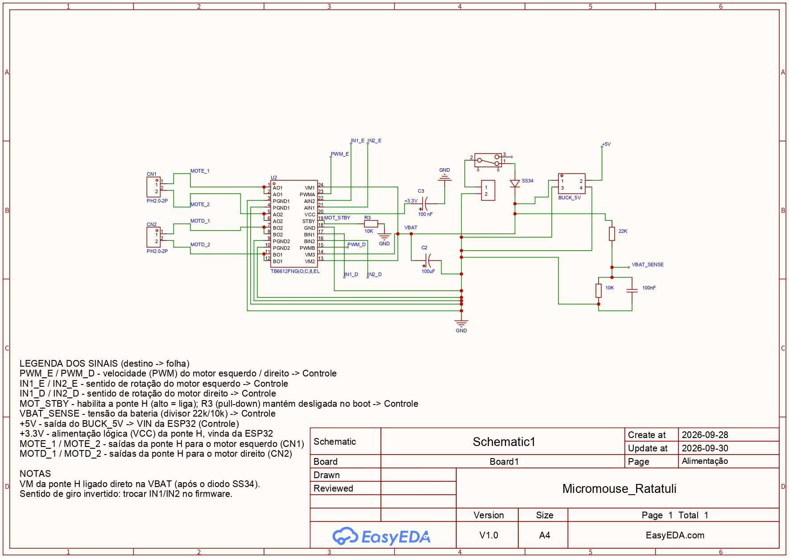

Projeto Conceitual de Hardware¶
Visão geral do hardware¶
O hardware do Micromouse Ratatuli integra alimentação embarcada, sensoriamento de paredes, processamento, acionamento dos motores e comunicação com o sistema de telemetria. A ESP32 DevKit V1 executa o firmware, recebe as informações do ambiente e da bateria e controla o movimento diferencial das rodas.
Após um realinhamento arquitetural com as equipes de Estrutura e Energia, o projeto de hardware evoluiu da sua versão inicial (motores de passo e sensores infravermelhos binários) para uma arquitetura de malha fechada, visando maior precisão de odometria e redução de peso.
Esta descrição consolida o projeto de Controle e Comunicação e os conteúdos de arquitetura, subsistemas e interfaces da entrega da Dupla 1.
Diagrama de blocos¶
Imagem 1: Diagrama de blocos

Fonte: João Vitor e Ana Victória, 2026.
Arquivo editável no Draw.io: Acessar diagrama de blocos
A fonte embarcada alimenta os caminhos de potência e de regulação da lógica. O conversor buck-boost fornece a linha de 5 V que chega à placa pelo terminal VIN. O divisor e o filtro disponibilizam ao ADC a informação de tensão da fonte. Os circuitos compartilham a referência GND.
A ESP32 recebe o sensoriamento via I²C, envia os sinais PWM e direção para a ponte H, e processa os pulsos de interrupt dos Encoders A/B. A telemetria segue por Bluetooth para a ponte do sistema web.
Principais subsistemas e Justificativas¶
Tabela 1: Principais subsistemas
| Subsistema | Função e conexões | Justificativa de projeto |
|---|---|---|
| Alimentação e proteção | Fonte embarcada, conversor Buck-Boost 5 V e divisor analógico. | Buck-boost garante 5 V estáveis na ESP32 (pino VIN) durante toda a curva de descarga da bateria. |
| Sensoriamento de paredes | 4 sensores Time-of-Flight (ToF, ex: VL53L0X) conectados via I²C e pinos XSHUT. | Medir distância absoluta em milímetros permite aplicar controle PID para centralizar o robô nos labirintos. |
| Acionamento e Odometria | 2 motores DC N20 com encoders, controlados por Ponte H Dupla (ex: TB6612FNG). | Encoders (A/B) fornecem odometria real (malha fechada), evitando falhas no mapa por derrapagem (slip). Menor peso e consumo. |
| Processamento e controle | ESP32 DevKit V1, gerando sinais PWM e gerindo rádio Bluetooth. | Concentrar processamento e rádio nativo sem ocupar espaço com módulos externos. |
| Configuração e sinalização | DIP switch, botão BOOT, LED e buzzer. | Entradas locais para facilitar calibrações de pista sem reprogramação. |
Fonte: João Vitor e Ana Victória, 2026.
Sensoriamento, movimento e telemetria¶
O sensoriamento utiliza quatro sensores ToF conectados ao barramento I²C. As linhas XSHUT permitem habilitá-los sequencialmente para atribuir endereços distintos durante a inicialização.
O acionamento dos motores DC N20 utiliza sinais PWM e de direção para a ponte H dupla. Os motores recebem corrente pela ponte H, não diretamente pelos GPIOs da ESP32. Os encoders A/B fornecem realimentação da rotação das rodas para o controle em malha fechada e a estimativa de deslocamento e velocidade.
A odometria por encoders continua sujeita a erros por derrapagem das rodas. A leitura do divisor fornece tensão da bateria, não uma medição direta de corrente ou carga acumulada.
Controle e Comunicação¶
Este subsistema reúne a unidade de processamento, a supervisão de funcionamento, a comunicação e as interfaces com os demais circuitos. Relaciona-se à unidade de processamento da EAP e aos requisitos de comunicação, watchdog e capacidade de I/O da Eletrônica.
1. Microcontrolador¶
A unidade de processamento é a ESP32 DevKit V1 de 30 pinos, identificada nos materiais do projeto. A placa reúne regulador de 3,3 V, interface USB de programação e botões de reset e BOOT. O firmware é executado nessa unidade, sem constituir um bloco físico separado.
A escolha reúne processamento, entradas e saídas e rádio integrado na mesma placa, além de suporte a I²C e à leitura dos encoders por interrupções. A organização do firmware separa as funções de aquisição e movimento das funções de comunicação; a navegação deve continuar autônoma em caso de falha da rede ou do sistema web.
Alimentação e limites elétricos¶
| Elemento | Aplicação no projeto |
|---|---|
| VIN | Recebe a alimentação proveniente da linha regulada de 5 V, através de D1. A queda no diodo deve ser considerada; VIN não é GPIO. |
| 3V3 | Terminal da linha de 3,3 V da placa; distinto de VIN. |
| GND | Referência comum aos circuitos. Os retornos de potência e lógica devem ser organizados separadamente. |
| GPIOs | Sinais lógicos de 3,3 V; não devem receber sinais de 5 V. |
| GPIO36 / VP | Entrada ADC1_CH0, sem capacidade de saída nem resistores internos de pull-up/pull-down. |
A bateria não se conecta diretamente ao ADC: o sinal passa pelo divisor e pelo filtro. A faixa de aquisição depende da configuração do ADC; 2,45 V não deve ser apresentado como um limite universal de entrada.
Referência técnica: ESP32 Pinout Reference — Last Minute Engineers, seções Input Only GPIOs, ADC Pins e Power Pins.
2. Watchdog e segurança¶
O projeto estabelece supervisão por watchdog para recuperação de travamentos e adota motores desligados como estado seguro. A recuperação do controlador deve preservar esse estado até a retomada do controle pelo firmware.
Na arquitetura V2, a interface de habilitação da ponte H é a linha MOT_STBY, ligada ao pino STBY do TB6612FNG (nível alto = ponte ligada). Na folha "Alimentação e Motores", o resistor R3 de 10 kΩ mantém o STBY em nível baixo (pull-down para GND), de modo que os motores permaneçam desligados durante o boot e em caso de reinício pelo watchdog. A folha de Controle ainda apresenta a rede legada MOT_EN e R1 de 10 kΩ para 3,3 V (pull-up, adequado ao enable ativo em baixo do A4988); essa rede deverá ser renomeada para MOT_STBY e o R1 removido ou convertido em pull-down, evitando conflito com o R3. O botão BOOT é uma entrada da placa tratada pelo firmware; não constitui um dispositivo independente de corte da alimentação dos motores.
3. Comunicação¶
A telemetria utiliza Bluetooth integrado à ESP32, com uma ponte no notebook para encaminhamento ao sistema web. A interface de rádio pertence à unidade de processamento e não exige um GPIO externo dedicado.
O sistema web recebe os dados do robô; o controle do trajeto permanece no firmware embarcado. A comunicação deve preservar a independência da navegação em relação ao receptor e ao backend.
4. GPIOs e pinagem¶
Imagem 2: GPIOs da placa ESP32 DevKit V1 de 30 pinos

Fonte: João Vitor e Ana Victória, 2026.
Figura 2 — GPIOs da ESP32 DevKit V1. Fonte: Last Minute Engineers — ESP32 Pinout Reference.
A tabela reúne o planejamento de sinais para a Arquitetura V2 (N20 + ToF). Os nomes representam redes funcionais; a alocação final dos GPIOs de acionamento deverá ser consolidada com a escolha da ponte H.
Tabela 2: Planejamento de sinais da arquitetura V2
| Pino / Rede | Tipo | Função principal |
|---|---|---|
I2C_SDA / I2C_SCL |
Comunicação | Barramento de leitura das distâncias dos sensores ToF |
XSHUT_1 a XSHUT_4 |
Saída digital | Habilitação sequencial dos ToFs para troca de endereço I²C; na folha de Controle, XSHUT_FE, XSHUT_FD, XSHUT_E e XSHUT_D |
PWM_E / PWM_D |
Saída digital | Controle de velocidade dos motores pela ponte H |
IN1 / IN2 (por motor) |
Saída digital | Sentido de rotação de cada motor, conforme a ponte H escolhida |
ENC_E_A / ENC_E_B e ENC_D_A / ENC_D_B |
Entrada por interrupção | Leitura dos canais A/B dos encoders dos dois motores |
MOT_STBY |
Saída digital | Standby da ponte H e economia de energia |
DIP_1 a DIP_4 |
Entrada com pull-up interno | Seleção de modos |
LED_STATUS / BUZZER |
Saída digital | Sinalização visual e sonora de diagnóstico |
VBAT_SENSE (GPIO36 / VP) |
Entrada analógica — ADC1_CH0 | Leitura da tensão da bateria pelo divisor e filtro |
| GPIO0 / BOOT | Entrada local | Botão BOOT da placa |
| VIN | Alimentação | Linha de 5 V através de D1 |
| 3V3 / GND | Alimentação lógica / referência | Linha de 3,3 V e terra comum |
Fonte: João Vitor e Ana Victória, 2026.
Restrições dos pinos utilizados¶
- GPIO36 / VP é uma entrada sem resistores internos de pull-up/pull-down. A bateria deve ser medida obrigatoriamente por divisor de tensão e filtro.
- Na folha de Controle atualizada, GPIO21 e GPIO22 são usados como
I2C_SDAeI2C_SCL. As entradasDIP_2eDIP_3foram deslocadas para os terminais TX2 e RX2. - GPIO25, GPIO26, GPIO27, GPIO14 e GPIO13 ainda aparecem com as redes legadas
STEP_E,DIR_E,STEP_D,DIR_DeMOT_EN; sua distribuição final deverá contemplar todos os sinais exigidos pela ponte H. - GPIO0, GPIO2 e GPIO12 são pinos de strapping: as cargas externas devem preservar as condições de inicialização. GPIO12 deve permanecer baixo durante o boot; GPIO0 baixo durante o reset seleciona a gravação.
- O EN da placa é o sinal de habilitação/reset do ESP32 e não se confunde com a habilitação dos motores (
MOT_ENna folha em transição;MOT_STBYno planejamento V2).
A programação e o diagnóstico utilizam a interface USB da placa, ligada à UART0 pelo conversor USB–serial. Referência: ESP32 Pinout Reference — GPIO Pins, UART Pins, Strapping Pins e Enable Pin.
O mapa complementar de funções dos terminais permanece disponível como referência de pinagem.

Documentação Elétrica (Esquemáticos Preliminares)¶
O registro elétrico foi desenhado no EasyEDA Pro.
Nota técnica de revisão (Transição V1 → V2): Devido à mudança de escopo arquitetural solicitada pela equipe de Energia durante o fechamento deste documento, os esquemáticos apresentam um estado de transição. A folha "Controle" (Imagem 3) já incorpora o barramento I²C, os pinos XSHUT e as entradas de encoder, mas ainda conserva os nomes
STEP_E / DIR_E,STEP_D / DIR_DeMOT_EN, além da legenda de acionamento por passos. Essas redes e a habilitação deverão ser revisadas para a ponte H. A folha "Alimentação e Motores" (Imagem 4) já foi atualizada para a V2, com a ponte H dupla TB6612FNG para os motores DC N20, mantendo o divisor de tensão e a proteção reversa da bateria já consolidados. Permanece pendente apenas a compatibilização dos nomes de rede da folha de Controle com essa folha.
Folha "Controle"¶
Imagem 3: Folha "Controle" do esquemático (Atualizada para interfaces V2)

A folha atualizada em 28/09/2026 substitui a imagem anterior de Controle. As portas de rede identificam as conexões com as demais folhas; os nomes da interface de motores ainda precisam ser compatibilizados com o planejamento da Tabela 2.
Componentes: U1 ESP32 DevKit V1 · D1 1N5819 (+5 V → VIN, impede que o USB alimente o regulador externo) · C1 10 µF e C2 100 nF (filtro no VIN) · R1 10 kΩ (pull-up da rede legada MOT_EN, a revisar para a ponte H).
O resultado de DRC registrado para a versão anterior não constitui validação desta revisão; a verificação deverá ser refeita após a compatibilização das folhas.
Folha "Alimentação e Motores"¶
Imagem 4: Folha "Alimentação e Motores" do esquemático (Atualizada para V2)

A folha, identificada como "Alimentação" na imagem (atualizada em 30/09/2026), apresenta a ponte H dupla U2 (TB6612FNG), os conectores dos motores CN1 (esquerdo, MOTE_1/2) e CN2 (direito, MOTD_1/2), o bloco BUCK_5V, a proteção com diodo SS34 e o divisor de 22 kΩ / 10 kΩ com filtro de 100 nF para VBAT_SENSE.
Os sinais de controle chegam da folha de Controle: PWM_E / PWM_D (velocidade), IN1_E / IN2_E e IN1_D / IN2_D (sentido de rotação) e MOT_STBY (habilitação da ponte). A inversão do sentido de giro é feita trocando IN1/IN2 no firmware.
Componentes: VM1/VM2/VM3 da ponte H ligados diretamente à VBAT, após o diodo SS34 · VCC da ponte H alimentado pela linha de +3,3 V da ESP32, com C3 100 nF de desacoplamento · C2 100 µF de desacoplamento na VBAT · R3 10 kΩ (pull-down do MOT_STBY, mantém a ponte desligada no boot) · divisor de 22 kΩ / 10 kΩ com filtro de 100 nF para VBAT_SENSE · BUCK_5V fornece a linha de +5 V para o VIN da ESP32 (Controle).
A identificação do conversor na folha (BUCK_5V) ainda deverá ser alinhada ao buck-boost de 5 V previsto na arquitetura V2.
Referências¶
- LAST MINUTE ENGINEERS. ESP32 Pinout Reference. Referência técnica e fonte da Figura 2 e do mapa complementar de terminais. Acesso em: 27/09/2026.